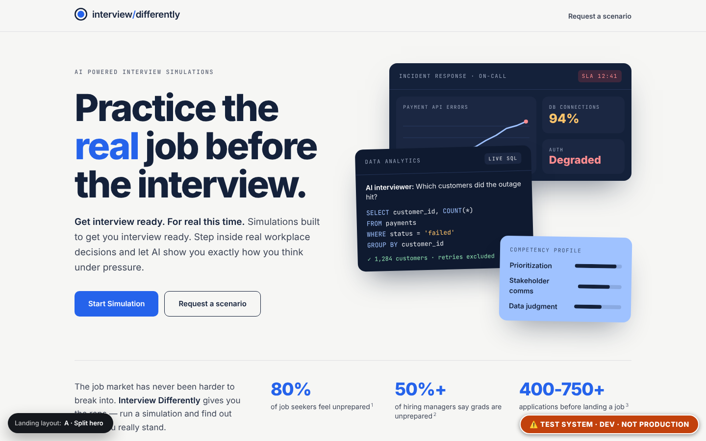

A new look for Interview Differently
Interview Differently now looks like the rest of the Learn Differently family: a light page, deep navy text and one blue accent, with the simulations themselves shown as dark panels. There is a new home page, a new logo, and a header and footer like Learn Differently's.
Good to know
- Nothing about how simulations work, or how they are scored, has changed.
- When a course in Learn Differently opens a simulation, it still shows in that organization's colours and logo.
- Administrators get an Admin toolbox page that leads to each admin tool.

